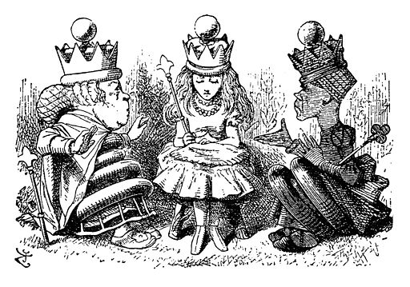

 John Tenniel, “Alice and the Red and White Queens”
To see all of this more clearly, we need to take a look at how arguments work. But first we should define what we mean by an argument. An argument is a simply series of statements including at least one premise and a conclusion. Since arguments are sets of statements: this means that when we are concerned with arguments we are not paying attention to many other uses of language, such as asking questions, making commands, expressing feelings. When we are offering an argument we are making a series of claims in which some are supposed to provide support for others. The statements that are doing the supporting, which contain the information that is the basis of our argument are known as premises. The statement that is being supported, the point of our argument is called the conclusion.
It is sometimes difficult to tell whether a set of sentences is an argument or not. Let us consider a few examples:
Parents should have the right to make decisions about their own children.
Why should other people mess around in their business?
And please keep those lawyers out!
This may seem like an argument, so how can we tell for sure? Simply by asking ourselves whether this set of sentences is a set of statements where some are supposed to support the others. So, how many statements are there here? Only one: the first sentence is a statement, the second is a question and the third is a command. In other words, even though this looks at first like an argument it is really just a single claim with no real argument given in support. It is truly amazing what people will try to get away with.
What about the next example? How many statements are in these sentences? And do any of them really offer support for any of the others?
I am convinced that aliens are living among us and you should be convinced as well.
I have really good evidence for this claim.
Well this is almost an argument, but not quite. There is a claim being made here: aliens are living among us. But there is no real support given for this claim, only the insistence that this person has some unknown evidence. Before we can start to evaluate this evidence to see whether it really supports the claim, we need to see it. So here we have only two separate statements without a real argument yet.
None of these sets of sentences have yet been real arguments even if they might have seemed to be at first glance. Now consider the following example:
Christopher Columbus was a criminal, because anyone who kills innocent people, kidnaps others, and steals their valuables is a criminal and that is just what he did.
Here the grammatical form is a little misleading. This is an argument in spite of the fact that there is only one sentence. Why? Because this one sentence expresses a few different claims and some of these claims are offered as supports for others. We can see this if we break it up into individual claims and change the order around like so:
Anyone who kills people, kidnaps other people and steals their valuables is a criminal.
Christopher Columbus did all of these things.
So Christopher Columbus was a criminal.
Perhaps this is not yet a very convincing argument, but at least it is an argument unlike the first examples.
It is not always so clear which statements in an argument are the premises and which statement is the conclusion. Often, but not always, these are signaled with one of a number of typical words or phrases that function as premise or conclusion indicators. Paying attention to these typical words and phrases can help you to disentangle the argument from the peculiarities of a writer’s style.
To help guide us through an argument a writer or speaker who is presenting an argument might use the following expressions and phrases to show what the argument rests on.
This is not an exhaustive list. Basically, when reading an argument you can pick out the premises by asking yourself where the writer is starting from and where he or she is going. The first is the set of premises and the second is the conclusion.
It is often the case that arguments are presented with the conclusion first to emphasize to the audience where things are leading. The following common words are often used to indicate what is playing the logical role of conclusion.
These words and phrases indicate that this is where the writer (or speaker) is going with the argument. Notice that in many actual arguments the conclusion is given first, as when a lawyer begins her argument in court with the claim, “Your honor, ladies and gentlemen of the jury, my client is not guilty,” and then goes on to present the evidence. For the sake of analyzing an argument philosophers like to clarify its logical structure by writing it in standard form.
One other thing to watch for when looking at arguments is words and phrases that indicate the structure of the reasoning itself. These are ways of pointing out exactly how the premises are supposed to support the conclusion, indicators of the pattern or form of reasoning involved.
These indicate the general logic form of argument being followed. Is it a matter of necessity, other conditions present or absent, summation of influences, or a process of elimination, or are we showing something indirectly by showing that denying it makes no sense? The more formal study of logic looks carefully at these and many other different patterns of reasoning.